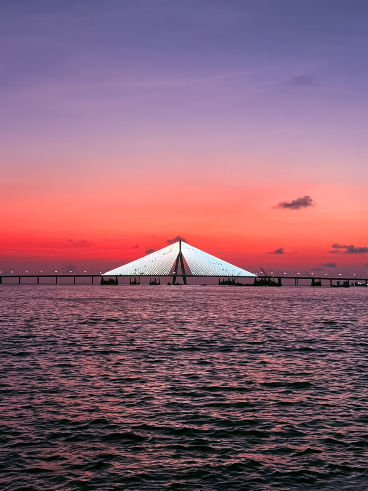

Mumbai, India · 2026
Mumbai After
Rain
12 photographs
A collection exploring the city during monsoon — the reflections, the silence between downpours and the way light changes everything when the rain decides to stop.



Mumbai, India · 2026
12 photographs
A collection exploring the city during monsoon — the reflections, the silence between downpours and the way light changes everything when the rain decides to stop.
